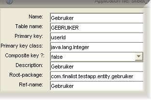

Entity bean configuration screen

This screen contains configuration options for the entity as a whole:
- Name: the name of the entity - this will be used in the class names of the generated entity classes.
- Table name: the name of the database table behind this entity.
- Primary key: the unique primary key field in this entity (should be left empty if using a composite primary key).
- Primary key class: the fully-qualified class of the primary key
- Composite key?: specifies whether or not the entity has a composite (multiple-field) primary key.
- Description: a human-friendly description for the entity.
- Root package: the package for the generated entity classes.